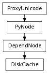

class counterpart of mel function diskCache
Command to create, clear, or close disk cache(s). In query mode, return type is based on queried flag.
Append at the end and not to flush the existing cache
Derived from mel command maya.cmds.diskCache
Specifies the type of cache to overwrite. mcfpfor particle playback cache, mcfifor particle initial cache. mcjfor jiggle cache. This option is only activated during the cache creation.
Derived from mel command maya.cmds.diskCache
Close the cache given the disk cache node name. If -eco/enabledCachesOnly is trueonly enabled disk cache nodes are affected.
Derived from mel command maya.cmds.diskCache
Close all disk cache files. If -eco/enabledCachesOnly is trueonly enabled disk cache nodes are affected.
Derived from mel command maya.cmds.diskCache
Delete the cache given the disk cache node name. If -eco/enabledCachesOnly is trueonly enabled disk cache nodes are affected.
Derived from mel command maya.cmds.diskCache
Delete all disk cache files. If -eco/enabledCachesOnly is trueonly enabled disk cache nodes are affected.
Derived from mel command maya.cmds.diskCache
Clear the content of the disk cache with the given disk cache node name. If -eco/enabledCachesOnly is trueonly enabled disk cache nodes are affected.
Derived from mel command maya.cmds.diskCache
Clear the content of all disk caches. If -eco/enabledCachesOnly is trueonly enabled disk cache nodes are affected.
Derived from mel command maya.cmds.diskCache
When present, this flag restricts the -ea/emptyAll, so that only enableddisk caches (i.e., disk cache nodes with the .enableattribute set to true) are affected.
Derived from mel command maya.cmds.diskCache
Specifies the end frame of the cache range.
Derived from mel command maya.cmds.diskCache
Specifies the type of frame range to use, namely Render Globals, Time Slider, and Start/End. In the case of Time Slider, startFrame and endFrame need to be specified. (This flag is now obsolete. Please use the -startTime and -endTime flags to specify the frame range explicitly.)
Derived from mel command maya.cmds.diskCache
Over sample if true. Otherwise, under sample.
Derived from mel command maya.cmds.diskCache
Specifies how frequently to sample relative to each frame. When over-sampling (-overSample has been specified), this parameter determines how many times per frame the runup will be evaluated. When under-sampling (the default, when -overSample has not been specified), the runup will evaluate only once per srframes, where sris the value specified to this flag.
Derived from mel command maya.cmds.diskCache
Specifies the start frame of the cache range.
Derived from mel command maya.cmds.diskCache
Query-only flag for the location of temporary diskCache files. Flag can have multiple arguments, passed either as a tuple or a list.
Derived from mel command maya.cmds.diskCache